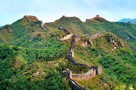
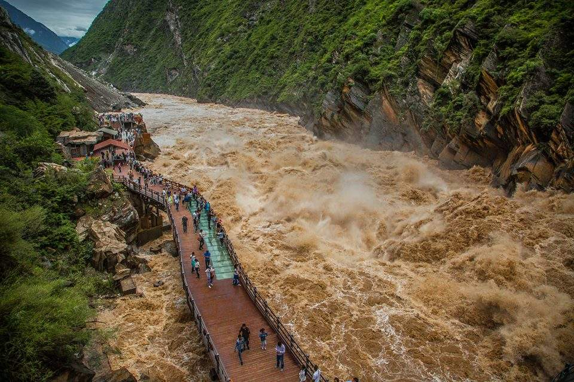
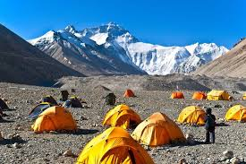
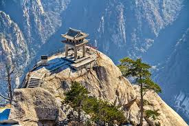

Путешествие вдоль самого грандиозного сооружения человечества
Пеший поход вдоль Великой Китайской стены предлагает уникальную возможность увидеть как восстановленные участки, так и дикие, заброшенные секции этого грандиозного сооружения.
Маршрут проходит по горным хребтам с захватывающими видами, сочетая физическую нагрузку с погружением в историю древней цивилизации.
"Великая стена - это не просто стена, это путь сквозь время и пространство" — Опытный треккер

Один из самых глубоких каньонов в мире

Ущелье Прыгающего Тигра на реке Янцзы предлагает один из самых впечатляющих треккинговых маршрутов Китая с вертикальными скалами и бурными водами.
Маршрут проходит через традиционные деревни народности Наси, предлагая возможность познакомиться с местной культурой и насладиться гостеприимством.
"Здесь река ревет как тигр, а горы касаются небес" — Местный гид
Путь к подножию высочайшей вершины мира
Треккинг к северному базовому лагерю Эвереста в Тибете - это путешествие к истокам великих рек и возможность увидеть величайшие горы планеты.
Маршрут требует серьезной акклиматизации из-за экстремальных высот. Рекомендуется провести несколько дней в Лхасе и Шигацзе перед восхождением.
"Эверест не покоряется, он лишь позволяет пройти" — Тенцинг Норгей

Духовные путешествия к местам силы

Пять великих священных гор Китая веками привлекают паломников и путешественников, предлагая уникальное сочетание природной красоты и духовного опыта.
Каждое восхождение на священную гору - это не просто физическое достижение, но и глубокое духовное путешествие, отражающее древние китайские традиции.
"Восхождение на священную гору - это разговор с небом" — Даосская мудрость
Подходит для новичков
Требуется опыт
Для опытных треккеров